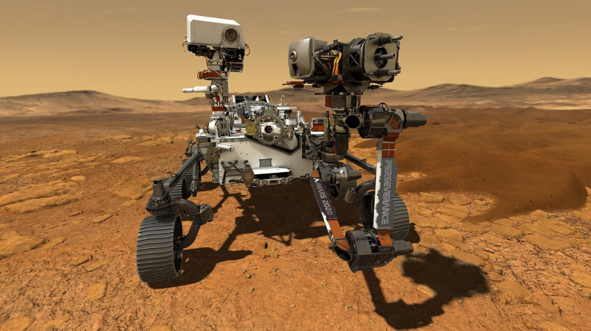
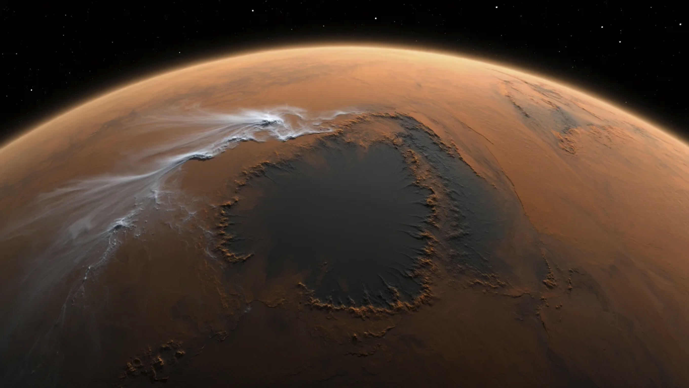

Марсоход Perseverance обнаружил следы древней речной дельты в кратере Езеро

Марсоход Perseverance (Настойчивость) сделал важнейшее открытие на Красной планете — он нашел убедительные доказательства того, что миллиарды лет назад в кратере Езеро существовала огромная речная дельта. Ученые NASA подтвердили, что обнаруженные отложения осадочных пород могли сформироваться только в присутствии воды.Анализ грунта показал наличие органических молекул и минералов, которые на Земле образуются в богатой микроорганизмами среде. Особый интерес вызвали слоистые породы, напоминающие высохшие русла земных рек.
"Мы ходим по дну древнего марсианского озера, — заявил ведущий исследователь миссии. — Если на Марсе когда-то была жизнь, лучшего места для ее поисков не найти".

Сейчас марсоход собирает образцы грунта, которые в будущем планируют доставить на Землю. Ученые надеются найти в них следы внеземных микроорганизмов.